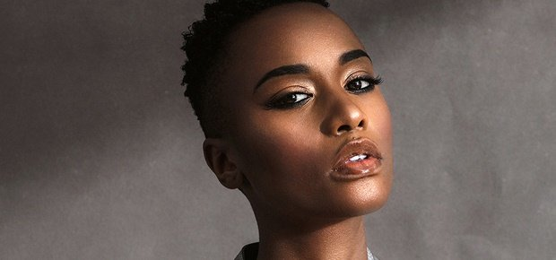

"BasaliTech is a non-profit organisation that exists to provide affordable opportunities for women and girls interested in learning science technology, engineering and mathematics, from relevant applications and gadgets to software development, electronics and robotics, through in person classes, workshops, seminars and community support. this is to protect their futures by introducing them to a growingfield in the market and to address the gender gap in stem."
I started to realise change from our societies when our school allowed females to study subjects such as basic handicrafts and design and techology which long ago woud've been considered 'male only' subjects.Our teachers recently realised that females are just as capable of handling the tasks that come with studying these subjects as well as their male counterparts. It was also realised that most female students have a great eye for design and usually bring better, more practical ideas for projects. BasaliTech's mission is similaras its main aim is to equip young girls and women with the necessary skills to be competent in the fast paced future that is the fourth industrial revolution. For most students in Lesotho, where the majority of the population is heavily reliant on a government approve curriculum and government ran institutions, computer learning is just not the norm, hence with its mission, BasaliTech has taken one step forward in bridging this gap.
"Strike a woman,and you strike a rock"
Ever since I was a little girl I had to wash dishes but my brother never did.I asked my father why I always had to wash the dishes whereas my brother never does,but he only said,"Because you're a girl!"Thats when I realised how men and women are considered to be different.I have been thinking that way until I knew and listened to one of the women who inspire me:'Mama Winnie Madikizela Mandela.'Many might know a couple of 'not so good' things she did but I consider the good ones.During (her husband) Nelson Mandela's time in prison she became the target of police harassment and brutality.She was arrested and jailed a number of times.Her continued resilience in the face of such violence is what motivated many people;women at most.For women,she was a guiding light who taught us to be defiant and fearless;to embody strenght,fortitude,conviction and be powerful.Her feminist legacy birthed vivacious young African women dedicated and determined to fight struggle we encounter on a daily basis.
picture
Mama Winnie's words and hard work during her lifetime modeled me into a strong and brave woman I never thought I would become.She gave me the motive to inspire females out there.To make them see their worth and make them know that physical appearance and power is not our most regarded asset-intellegence and wisdom are what we should all consider;these are essential features that aid us to gravitate towards our passion.She made me realise how intellegent,strong,independent and superior females are.
REPRESENTATION MATTERS

Growing up a pageant princess, i always had dreams of winning a major international pageant. In 2017 when i met the then Miss South Africa, who later became Miss Universe of the same year, i felt a step closer towards my dream.Having a onversation with one of my idols ignited further, my ambition.However, looking at her, i realised something very important, she looked nothing like me. Infact most of the previous winners of the pageant looked nothing like me. They all had sandy blonde hair, striking light eyes, eurocentric features that were celebrated everywhere in the world.It hurt, i felt invisible. In 2019, it all changed when a young lady from a small town in a continent that is hardly ever recognised, won. Zozibini Tunzi won Miss Universe, crushing all beauty stereotypes as we know them.Short, kinky hair and dark hair, a Miss Universe that looks like me. For the first time in my life, i had an opportunity to see the world marvel and appreciate Afrocentric features. A major win for black girls worldwide.